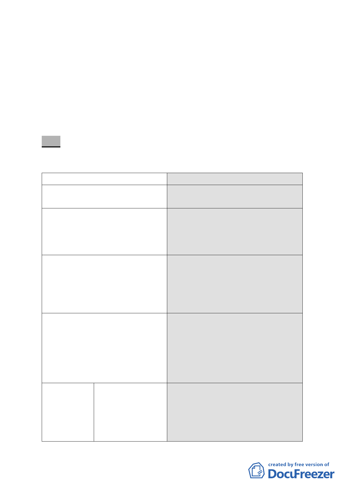

七、 本次提會資料共分為 4 部分：
■市府 98.11.24.公告公開展覽之細部計畫內容。
■市府 100.9.16.檢送配合內政部審定之主要計畫，以及細
部計畫專案小組審查意見據以修正之細部計畫內容。
■細部計畫修正前後對照表。
■市府對於公民或團體陳情意見之回應情形。
決議：
一、 本案修正後通過，各項修正內容依下列表格所列決議辦理。
項
1.法令依據
目
2.計畫範圍
3.策略性開發地區之指定
4.使用分區及用地
5.土地使用 ●建蔽率及容積率
分區管制
決議
以公展計畫書「都市計畫法第 22 條」
為本細部計畫擬定之法令依據。
細部計畫範圍請依本次提委員會簡
報資料，修正為同內政部將核定的主
要計畫範圍（即市地重劃範圍，面積
6.9 公頃）。
本地區主要計畫業指定本案範圍內
之商業區土地為「策略性再開發地
區」，計畫書內文字請作修正，並於
相關圖面標註「策略性再開發地區」
範圍。
同意依市府 100 年 9 月 16 日所送修
正後計畫書內容，商業區擬定為特定
商業區（一）、特定商業區（二），公
共設施用地擬定為公園用地（供流行
音樂中心使用）、公園用地以及轉運
站用地。
同意依市府 100 年 9 月 16 日所送修
正後計畫書內容：
1.特定商業區（一）：建蔽率 55％、
容積率 382％。
2.特定商業區（二）：建蔽率 55％、
- 13 -